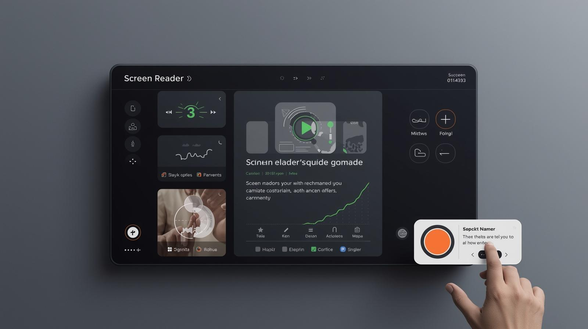

Porque as tags semânticas na formação de um site são importantes para acessibilidade para pessoas com deficiência
• O que são tags semânticas no HTML5?
Tags semânticas no HTML5 são elementos que descrevem claramente o significado do conteúdo que eles envolvem. Em vez de usar tags genéricas apenas para estrutura visual, as tags semânticas indicam o papel do conteúdo dentro da página. Algumas tags semânticas comuns do HTML5 são usadas para indicar a função de cada parte do conteúdo dentro de uma página, como as tags: header; nav; main; etc...
Este vídeo mostra como as tags semânticas funcionam no HTML5
• Por que torna a navegação mais acessível para pessoas com deficiência?
As tags semânticas tornam um site mais acessível porque ajudam tecnologias assistivas a entender a estrutura e o significado do conteúdo da página. Pessoas com deficiência visual, por exemplo, muitas vezes utilizam leitores de tela, que são programas que leem o conteúdo da página em voz alta. Esses programas precisam entender como a página está organizada para apresentar a informação corretamente.
